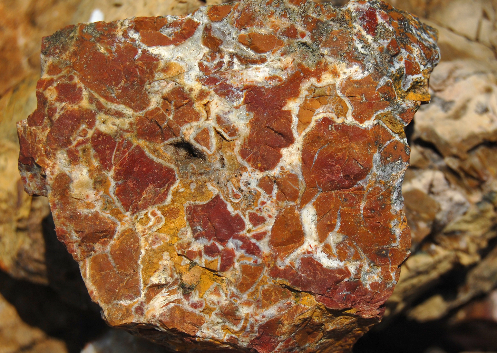
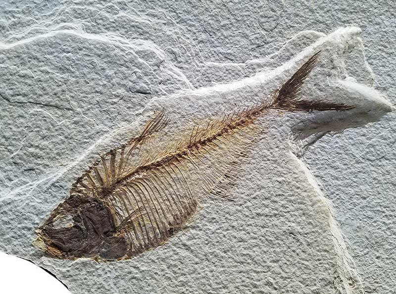

New here?

New to rockhounding and don't know where to start? Not to worry, we will show you the ropes. Click below to head over to our "Getting Started" guide
Getting StartedRocks & Minerals In Wyoming


Wyoming is a rockhound's paradise, offering an incredible variety of minerals, crystals, metals, and fossils to discover. With its diverse geological history and unique landscapes, the state provides an exciting and rewarding experience for both amateur and experienced collectors alike. Don't miss exploring locations such as the Green River Formation, Seminoe Mountains, and Laramie Range for a memorable rockhounding adventure.
Sponsored Dig Site

Own a digsite you would like to advertize in Wyoming? Contact us for more information about being our sponsor of the month! Email sponsors@rockhounding.org for more information.
Dig With UsPopular Rocks In Wyoming
-

Red Jasper
Red Jasper is a beautiful red, semi-precious stone found in Wyoming. It can be found in various locations, including the Granite Mountains and Sweetwater River.
Read More -
 Amethyst
AmethystAmethyst, a violet variety of quartz, can be found in Wyoming's Laramie Mountains and the Green River Basin.
Read More -
 Jade
JadeWyoming is well known for its nephrite jade deposits, particularly in the Jeffrey City and Crooks Gap areas.
Read More -
 Azurite
AzuriteAzurite, a vibrant blue copper mineral, can be found in Wyoming's copper mines, such as the Copper King Mine near Encampment.
Read More -

Fossil Fish
Wyoming's Green River Formation is famous for its exceptionally preserved fossil fish, found in areas like Fossil Butte National Monument.
Read More -
 Gold
GoldGold can be found in Wyoming, particularly in the South Pass-Atlantic City-Sweetwater mining district.
Read More -
 Barite
BariteBarite, a heavy white mineral, can be found in various locations in Wyoming, including the Casper Mountain and the Shirley Basin.
Read More -
Rock Crystal
Rock Crystal, a clear variety of quartz, can be found in various locations throughout Wyoming, including the Black Hills and Laramie Range.
Read More -
 Agate
AgateAgates are colorful, banded microcrystalline quartz that can be found in various locations in Wyoming, such as the Wind River Basin and Seminoe Mountains.
Read More -
 Trilobite
TrilobiteTrilobite fossils, ancient marine arthropods, can be found in Wyoming's Paleozoic rock formations, such as the Medicine Bow Mountains.
Read More
Popular Areas In Wyoming
-
 Green River Formation
Green River FormationThe Green River Formation in southwestern Wyoming is known for its abundant fossil fish and other ancient aquatic life.
Read More -
 Laramie Range
Laramie RangeThe Laramie Range in southeastern Wyoming is a popular spot for finding rock crystal, agates, and jasper.
Read More -
 Wind River Basin
Wind River BasinThe Wind River Basin, located in central Wyoming, is a great place to search for agates, petrified wood, and jasper.
Read More -
 Medicine Bow Mountains
Medicine Bow MountainsThe Medicine Bow Mountains in southern Wyoming are known for trilobite fossils and other Paleozoic-era marine life.
Read More -
 Seminoe Mountains
Seminoe MountainsThe Seminoe Mountains in south-central Wyoming are known for their abundant agates and other minerals.
Read More -
 Big Horn Mountains
Big Horn MountainsThe Big Horn Mountains in north-central Wyoming offer opportunities to find jasper, agates, and other minerals.
Read More
Geology of Wyoming
Wyoming's geological history spans over 2.5 billion years, beginning with the formation of ancient rocks during the Archean Eon. The state's early history includes the formation of the Wyoming Craton, a stable section of the Earth's crust that has remained relatively unchanged for billions of years.
Throughout the Precambrian Era, Wyoming experienced multiple episodes of mountain-building and erosion, which led to the deposition of sedimentary layers. The Paleozoic Era saw the rise of shallow seas that covered much of Wyoming, creating vast deposits of limestone, sandstone, and shale. Marine life thrived in these seas, leaving behind an abundance of fossils.
During the Mesozoic Era, Wyoming was home to vast swamps and forests, which eventually transformed into rich coal deposits. Dinosaurs roamed the land, leaving behind fossils that are still discovered today. The Cretaceous Interior Seaway covered much of the state, depositing sedimentary layers and hosting diverse marine life.
The Laramide Orogeny, a major mountain-building event, shaped Wyoming's landscape during the late Cretaceous to early Tertiary periods. This event formed the Rocky Mountains, including the Wind River Range, Big Horn Mountains, and Laramie Range. Subsequent erosion exposed ancient rocks and created the unique topography seen in Wyoming today.
During the Cenozoic Era, volcanic activity was widespread in Wyoming, with the Yellowstone hotspot leaving a trail of volcanic deposits across the state. Glaciers also played a significant role in shaping Wyoming's landscape, carving out valleys and depositing moraines throughout the state.